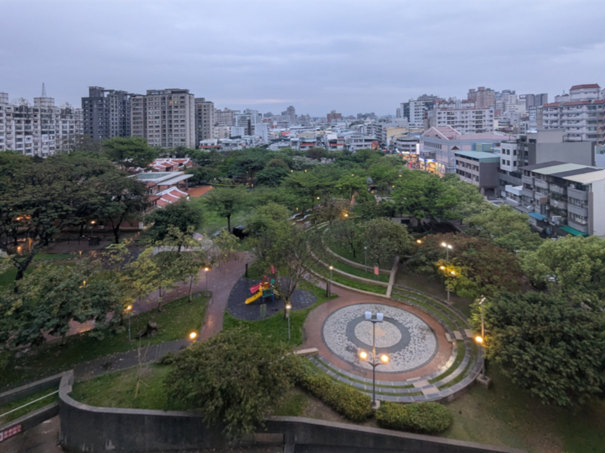
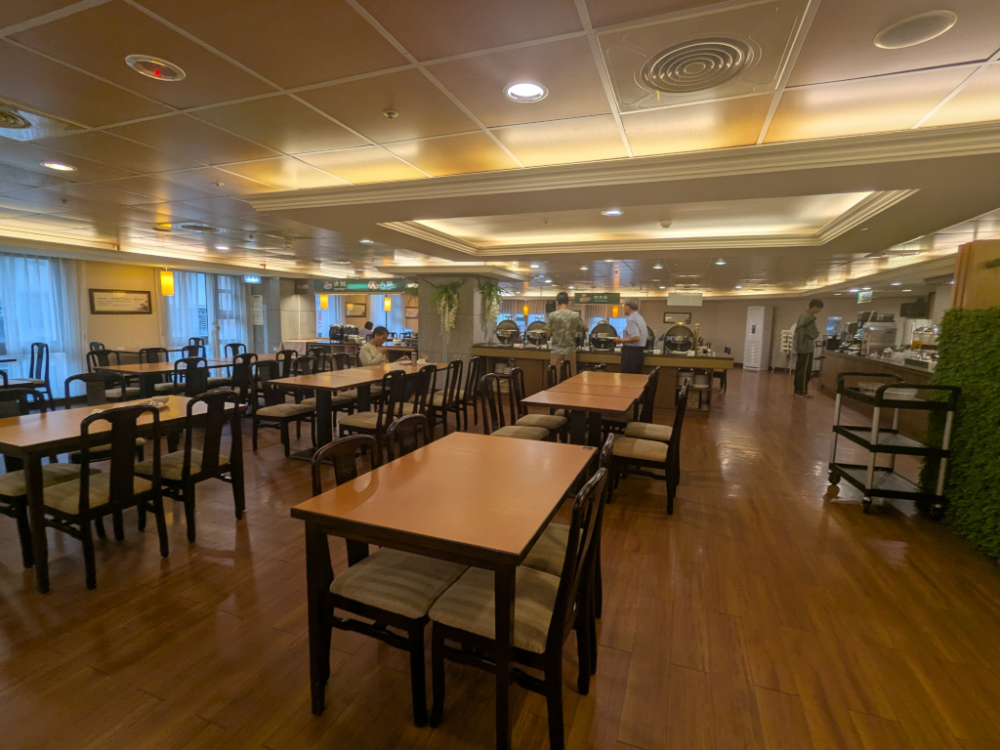
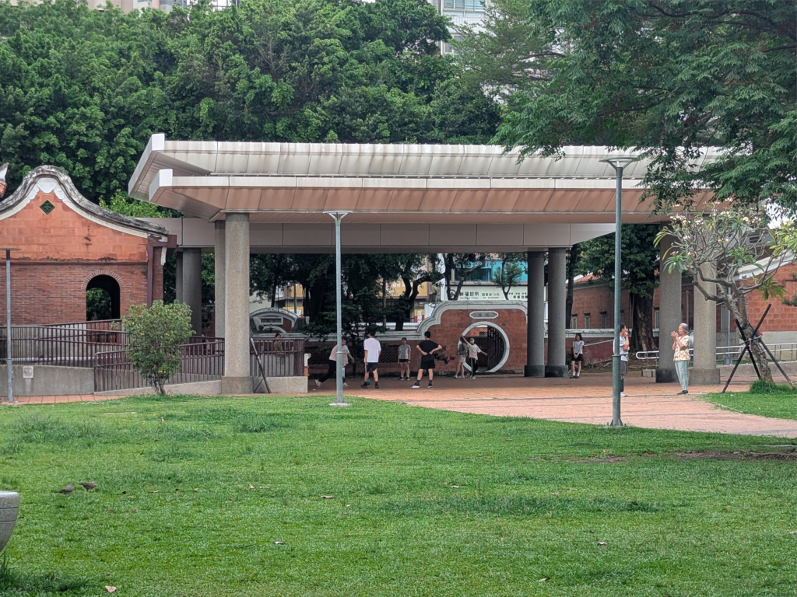
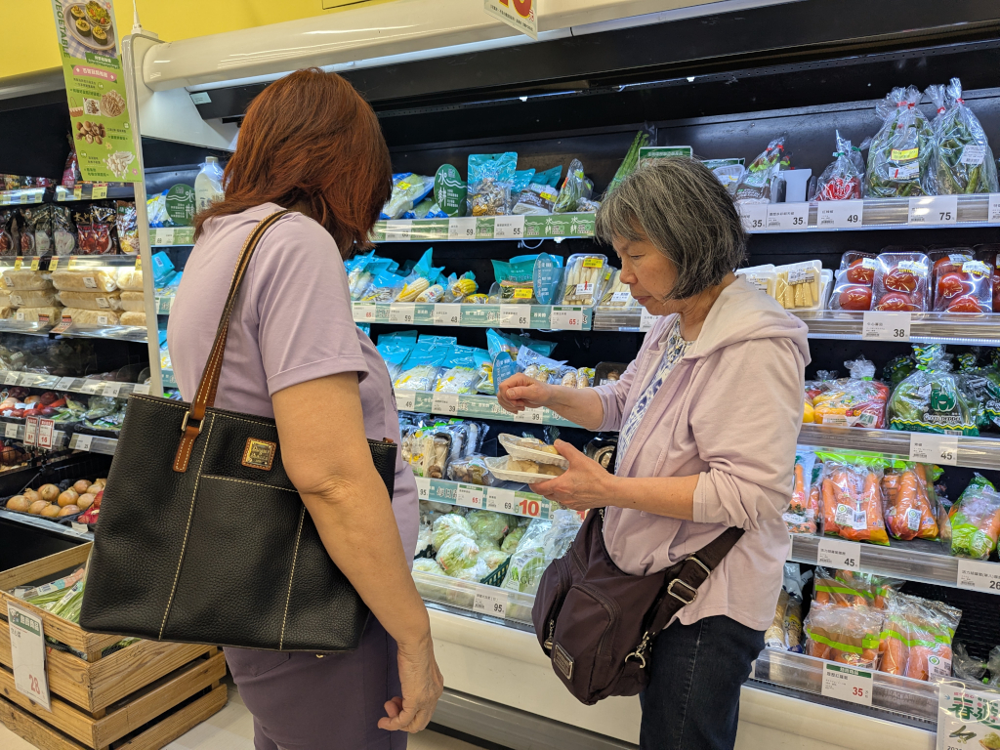
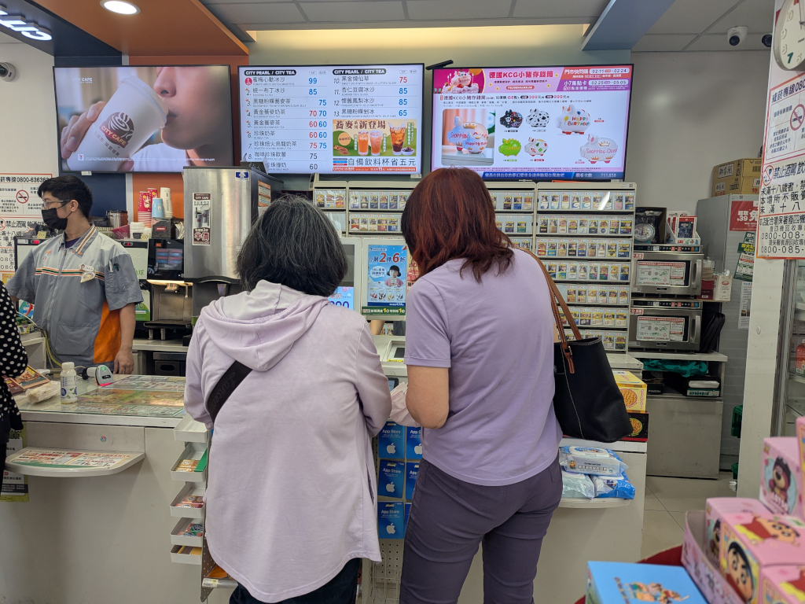
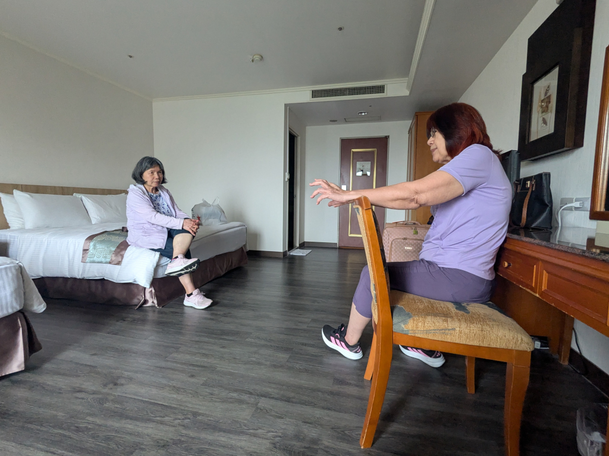
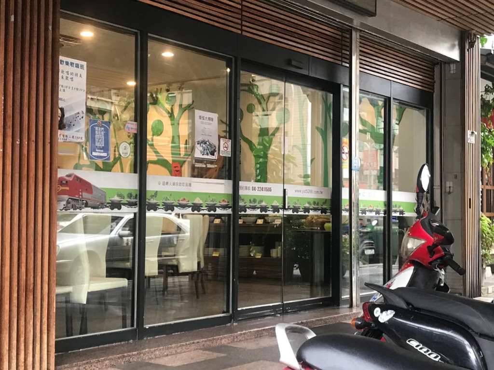
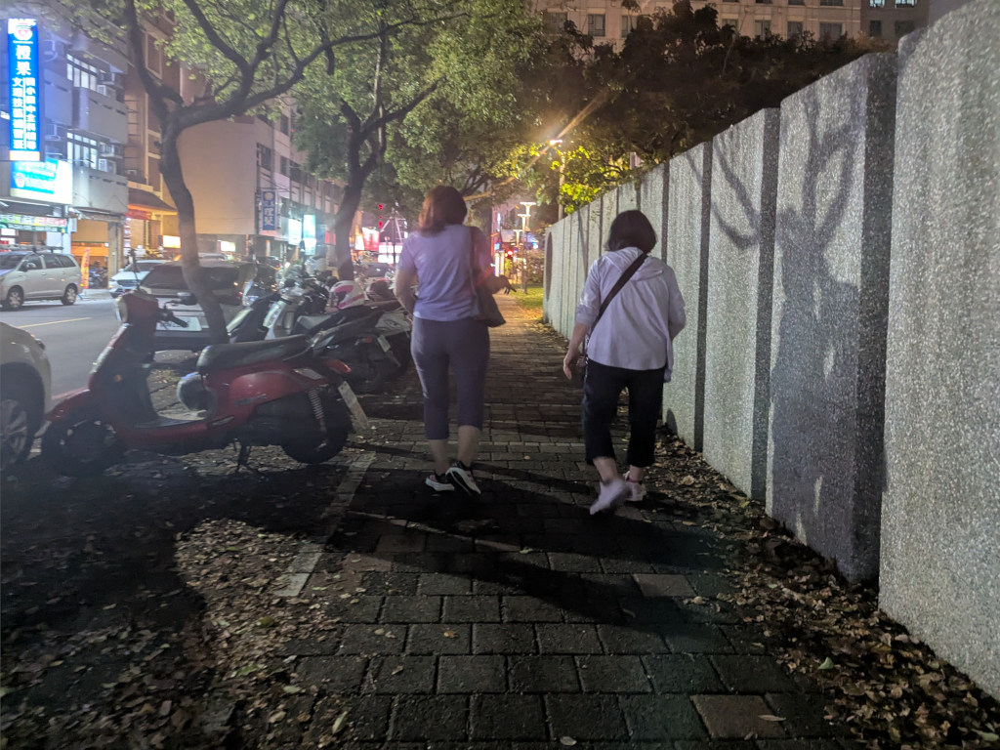

A street vendor making 小籠包. | ||
April 8, 2026  This is what we woke up to every morning. The 民俗公園 (Folklore Park) was right below and directly to the east of our hotel room. We often had a great view of the sun coming up over the mountains, but not today. As the morning went on, activity in the park picked up; people walking their dogs, people exercising, doing taiji, playing badminton, mothers just gathering together with babies in strollers or their toddlers running around playing on the small playground together, and all sorts of other activities. It was fun to watch from above. One of the great things about staying at the 中科大飯店 (Zhong Ke Hotel) was their great all-you-can-eat breakfast buffet. Not just the fact that it was all you can eat; they had a really great selection which changed everyday. This was my first plate; I had more, and ate too much, as I did every day. Later in the day, after relaxing in our room fighting jet lag for a while, we headed down to the park for a walk, just to try to stay awake. Here are some of the things we saw. Meihui came over this afternoon, and we walked to a nearby supermarket to buy some ginger that Mei-O wanted so she could make ginger-honey tea in our hotel room. (She brought honey from home.) Before heading back to the hotel, Meihui took us to a 7-Elevennote7-Elevens are all over Taiwan. The very popular convenience store can be found in most neighborhoods providing all sorts of
products and services, including a lot of both hot and cold snack foods. to recharge our
悠遊卡 (Easy Cards). These are used for public transportation all around Taiwan, and Mei-O
brought along two that we had from our last trip here. They were still good, and even had some money remaining on them, but we added
another NT$100 to each one in case we wanted to take the bus or Metro anywhere. (Public transportation is very cheap in Taiwan. A bus
ride may cost just 35 or 50 cents, depending on how far you go.) The cards can even be used as cash in some stores, 7-Eleven included.
 Having not seen each other for 9 years, Meihui came up to our room for a while to talk and reminisce before taking us to dinner at... ...養素庭火鍋, a very cool (and very popularnoteThis picture, a broad view of the interior, is from the internet. ) vegetarian 火鍋 (hot pot) restaurant right
down the street from our hotel. The restaurant features a train with a powerful engine pulling many small vegetarian items
around
the restaurant (2:59, long, but it's fun to see all the available selections on the trainnoteThe green sign on the last boxcar reads, "Distinguished Guests of Yangsuting: If you are not satisfied with the cuisine
on this train—or if you missed the opportunity to retrieve it—we will provide you with a fresh replacement on the next scheduled run.
We look forward to seeing you again soon." ) so each seated customer could select whichever items he or
she wanted for their 火鍋 which sat on the counter before themnoteThe silver circular thing is my 火鍋 pot before I placed anything in it. The dark color comes from the selection of broth I
started out with (there are nine broth choices). . Here's mine after I
placed some stuff in it. The train even carried along small bags of various types of noodles and even some not-stinky (but still good)
臭豆腐, and looped back through the
kitchen so it could be restocked when needed, often appearing with new not-previously-available items with each pass. It was pretty
cool, and very satisfying too.
 After dinner, we walked back to the hotel. Due to our jet lag, we were pretty tired, but our first full day in Taiwan turned out to be pretty good. | ||
{kind=link}
{kind=link}
{kind=link}
{kind=link}
{kind=link}
{kind=link}
{kind=link}
{kind=link}
{kind=link}
{kind=link}
{kind=link}
{kind=link}
{kind=link}